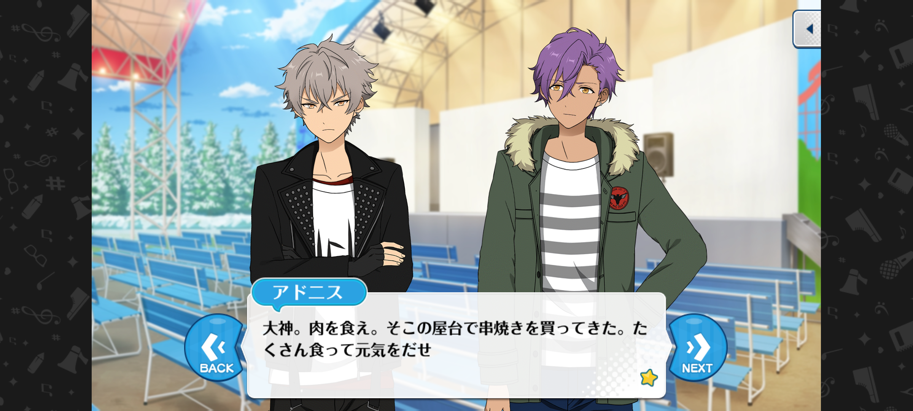
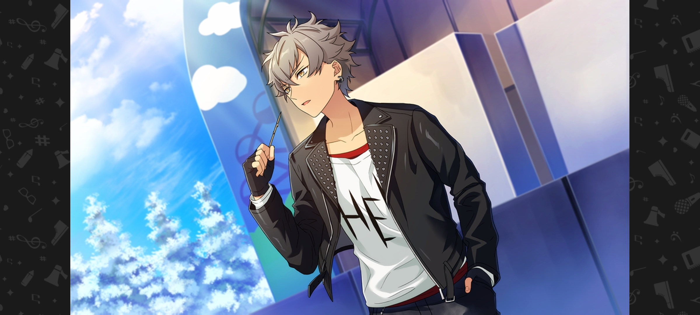
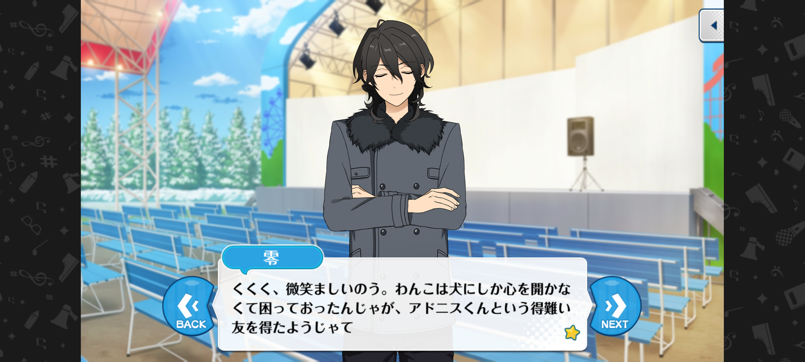
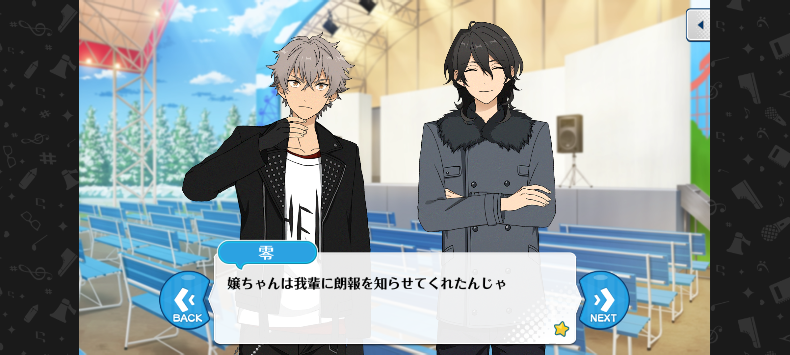

Scout! Amusement Park Show
Amusement Park Show – Chapter 4


Location: Amusement Park Stage

Koga: ...
Adonis: Oogami. Eat some meat. I bought these meat skewers from that food stall. Make sure you eat plenty and build up your strength.
Koga: Oh, Adonis. Ya don't gotta worry about me.
Adonis: We're friends. Partners, even. Of course I'm going to worry about you.
Koga: Dammit, Adonis. That's so like you…♪ Well, if ya insist. Thanks. Heh-heh~♪
Adonis: That makes me feel a little better.
You seemed so eager to take part in the live, so I thought you must have been disappointed when it was interrupted.
I was worried you might not want to take part in today's show, either.
Koga: No point frettin' over it~. I'd be lyin' if I said the whole thing didn't catch me off guard.

But takin' part in a show for kids means I gotta stop swearing. It's not like I can go back on my word now~
Adonis: You take your promises seriously.
Koga: Well, yeah. It's only right, ain't it? If ya make a promise, ya gotta keep it.
Adonis: …I suppose so. Breaking a promise is a sad thing to do.
A while ago, my older sister invited me to go out with her. I immediately assumed she would expect me to carry her bags, so I turned her down.
However, she promised that wouldn't happen, so I trusted her. But she broke that promise almost straight away.
…It made me very sad. I remember vowing to myself to never become like her.
Koga: Adonis…You’ve been through a lot, too. Here, have another skewer. My treat ♪
Adonis: Are you sure, Oogami?
Koga: You're my bud, ain't ya? I'm happy to share with a friend. Next time, I'll introduce ya to my best mate.
He's a pretty good-natured guy, so I'm sure you'll get along just fine~♪

Rei: Kukuku, how lovely. Wanko used to have quite a hard time opening his heart to anyone but dogs, but it seems he's finally found himself a friend worth cherishing.
It's so heart-warming, I fear I may simply melt away~♪
Hm…? Ah, Little Miss Anzu-chan. Did you overhear me talking to myself?
Look over there. It seems Wanko and Adonis-kun have found themselves a bench to sit on.
It appears Adonis-kun's encouragement has brought some life back to our previously gloomy Wanko~♪
Wanko is quite a guarded person, wouldn't you say? He opens his heart to certain friends, yet keeps everyone else at arm's length.
Things are going smoothly with Kaoru-kun and myself around, but I do worry about what might happen if we weren't here.
However, I'm glad to see my concerns were unfounded. With Adonis-kun by his side, Wanko will be just fine.
Now, let me rest in peace in the darkness of this world. The sun is so strong, I feel I might wither away at any moment…
What's the matter, Anzu-chan? You're tugging on my hand. Where are you taking me?
I see. You've brought me somewhere out of the sun's harsh rays, so I can recover my strength?
And you're giving me tomato juice, too. What a clever little girl you are~♪
Fuah… I'm finally feeling like myself again~♪ If you share a little of your vitality with me, I might become even livelier, hm~?
Kukuku, there's no need to turn pale and run away. I won't bite, so you can relax~♪
You still have work to do? Ah, so the reason you called me over in the first place was to discuss something work-related, wasn't it?
Ah, I see. If more than half the audience are satisfied with the show, we'll be allowed to perform a live set as an encore?
I truly am grateful to you, Anzu-chan. I think I ought to whisk you away and hide you in a secret room, somewhere fit for a treasure such as yourself~♪
Ah, but first, we must tell Wanko and Adonis-kun. Their conversation seems to be drawing to a close, so let us make our attack…♪

Koga: Gah, what the hell!? Don't just jump outta nowhere~
Anzu's with ya, too. Did the vampire bastard capture ya?
Rei: Anzu-chan has brought me some wonderful news.
Koga: Good news?
Rei: Indeed. If we can satisfy the audience, we'll be allowed to put on a live performance as an encore.
Koga: Huh…!? Is that true, Anzu!?
Fuck yeah! We get to perform after all~♪ Funfufu~♪
Rei: Wanko, are you listening? If we fail to satisfy the audience, there will be no live performance.
Koga: Yeah? So all I gotta do is get the crowd on our side, right? I'll entertain those little brats with my singing and a killer performance…♪
Rei: Yes, the show will involve singing and dancing, but I don't believe Wanko has quite grasped the concept.
Well, I shan't dampen your enthusiasm. Please, entertain the children to your heart's content~♪
Now that Wanko and Adonis-kun are in the know, let's not waste any more time. Shall we take our little Anzu-chan off to that secret room, hm~?
Koga: A secret room~? Ya plannin' on doin' somethin' to Anzu? Oi, Adonis.
Adonis: Got it.
Rei: Hmm. With Adonis-kun standing in my way, Anzu-chan is quite out of reach.
Adonis: I will protect the weak.
…I understand. Anzu is no longer helpless or vulnerable to outside threats.
You are Yumenosaki's producer. Everyone has faith in you, and no one would dare disobey you.
But I still want to protect you.
There are many people like Sakuma-senpai who wish to make Anzu their own. You are a woman, and you cannot match a man's strength.
Oogami and I will protect you from the wicked advances of our senpais. So please, do not worry.
Koga: Tch. I owe Anzu big time, so I'll protect ya with everything I've got…♪
Rei: Kukuku, it seems there's no room for me here~♪
Koga: Hey, c'mon, Anzu. You can have a special seat where ya can listen to my— I mean, our performance! Heheh, thanks a bunch, Producer…♪